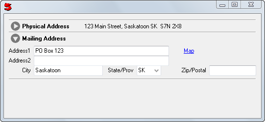

((label, control) [, (label, control) ... ], open = false)
Provides a set of vertical ExpandContol's which can be used to show or hide controls.
If open is true the controls start expanded.
When a tab is closed AccordionControl Send's NeedSummary() indicating that a summary is needed for the closed tab, the value returned will be used as summary. If the controller does not respond to NeedSummary the control can have a MakeSummary method.
NeedSummary can use a source parameter and check source.Label
Methods
Example
Window(#(Border
(Accordion
('Physical Address' Address)
('Mailing Address' Address)
ystretch: 1)))

Note: EditorControl and AddressControl have MakeSummary methods.
See also: ExpandControl